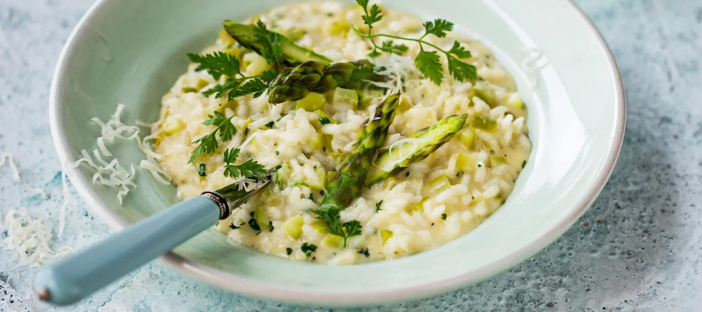

Spargel-Risotto

Für 4 Personen
Zutaten:
- 2 Zwiebeln
- 1 Knoblauchzehe
- 4 EL Olivenöl
- 250 g Risottoreis
- 1/4 l trockener Weißwein
- 2 TL Gemüsebrühe (instant)
- 500 g grüner Spargel
- 50 g Parmesan (Stück)
- 2 EL Butter
Zubereitung:
- Zwiebeln und Knoblauch schälen und fein würfeln. 1 EL Öl in einem Topf erhitzen. Knoblauch und
Hälfte Zwiebeln darin bei schwacher Hitze glasig dünsten. Reis zufügen, kurz mitdünsten, bis es knistert.
- Mit Wein ablöschen, aufkochen und verdampfen lassen. 3/4 l Wasser aufkochen, Brühe darin auflösen.
Nach und nach Brühe zugießen sodass der Reis immer knapp mit Flüssigkeit bedeckt ist.
Risotto insgesamt ca. 20-25 Minuten garen (auf Packung achten), bis er cremig, der Reis im Kern aber
noch bissfest ist.
- Spargel waschen, 8-10 cm lange Spargelspitzen wegschneiden, holzige Enden abschneiden und die
Stangen in 2-3 cm lange Stücke schneiden. Spargelspitzen in siedendem Salzwasser 3-5 Minuten
knapp weich kochen. Kalt abschrecken, halbieren und zugedeckt beiseitestellen.
- Spargelstücke 5-7 Minuten vor Garzeitende unter den Risotto rühren. Parmesan fein reiben. Käse
und Butter unter den Risotto heben. Mit Salz und Pfeffer abschmecken.
Quellen: www.lecker.de und www.swissmilk.ch